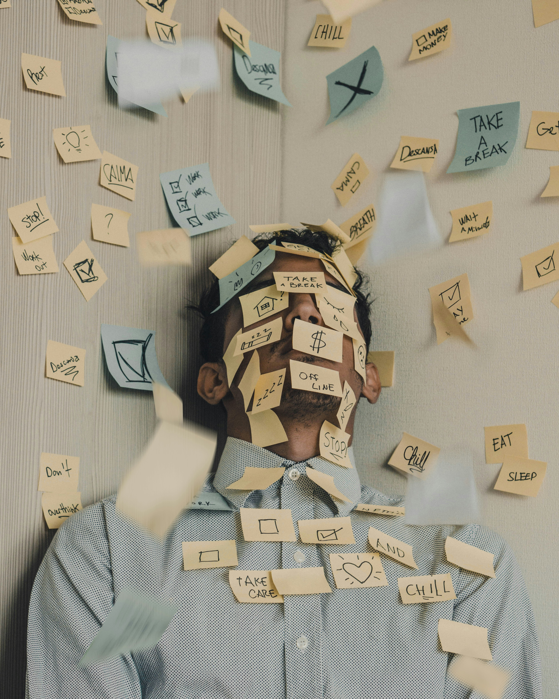

Ce este stresul?
Stresul este o reacție naturală a corpului și minții atunci când simți că trebuie să faci față unei presiuni. Poate apărea în fața unei provocări, a unei schimbări sau atunci când simți că nu ai control. Nu este întotdeauna rău: un pic de stres te poate motiva. Dar în exces, poate deveni o problemă.
Tipuri de stres
- Stres acut – este o reacție de scurtă durată la o situație presantă. De exemplu: un test important, o prezentare în fața clasei sau o competiție sportivă.
- Stres cronic – apare atunci când ești expus frecvent sau constant la factori de stres, cum ar fi: programul prea încărcat, lipsa timpului de relaxare sau responsabilități excesive.
Cauze frecvente ale stresului la tineri
- Așteptări mari la note și teste, comparații cu alți colegi
- Probleme în relații sau familie
- Lipsa timpului liber și a somnului
- neîncrederea în sine
Semne că ești stresat
- Te doare capul sau stomacul des fără motiv
- Îți pierzi răbdarea repede
- Dormi greu sau te simți obosit constant
- Nu mai ai chef de lucruri care îți plăceau
Ce poți face pentru a gestiona stresul?
- Fă pauze scurte între sarcini și respiră adânc
- Vorbește cu cineva cu care te simți confortabil.
- Fă mișcare: mers, alergat, dans
- Scrie într-un jurnal ce simți – ajută să te eliberezi
- Ascultă muzică sau fă ceva ce te relaxează
Când e bine să ceri ajutor?
Dacă te simți copleșit mai multe zile la rând, dacă simți că nu te poți concentra, că ai gânduri negative persistente sau dacă somnul și apetitul îți sunt afectate, este important să discuți cu un adult sau chiar cu un psiholog. Cererea de ajutor este un semn de putere, nu de slăbiciune.
Nu ești singur. Toți simțim stres. Ce contează este cum înveți să îl gestionezi.

🧠 Simptome
Durere de cap, oboseală, dificultăți de concentrare, tristețe.
💡 Cauze
Standarde ridicate, lipsa timpului, așteptări prea mari, neîncrederea în sine.
🧘 Soluții
Relaxează-te. Fă pauze între activități, vorbește cu un prieten, ascultă muzică și bucură-te de timpul tău liber.